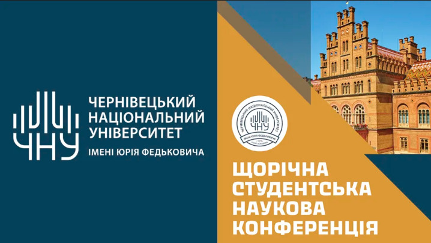

Студентська наукова конференція
15 червня 2026
У стінах університету відбулася щорічна суїтна студентська наукова конференція. Понад сто учасників представили свої доповіді з програмної інженерії, штучного інтелекту та веброзробки. Найкращі роботи були відзначені дипломами.